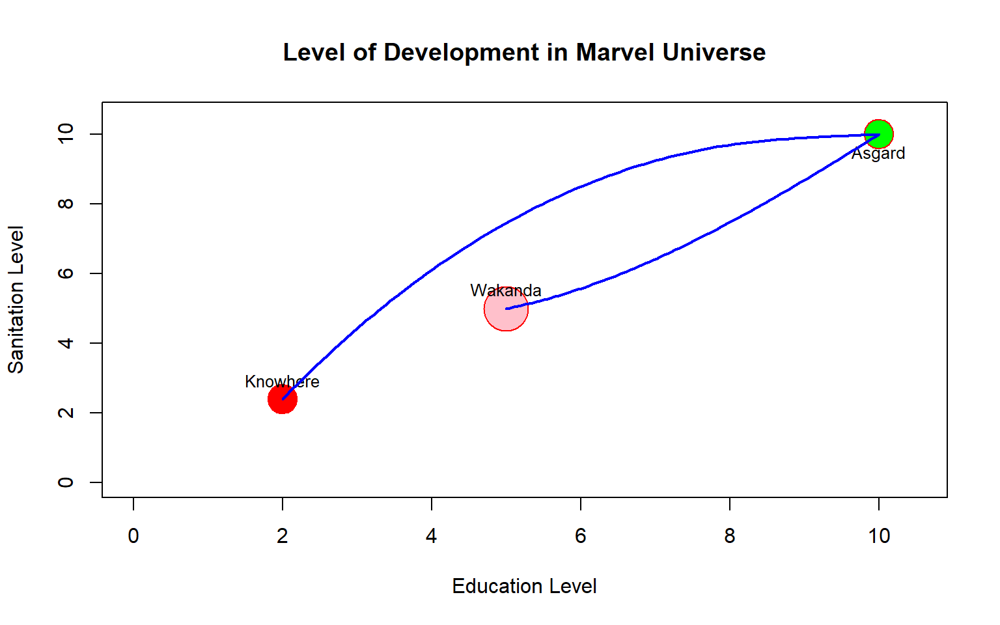

“First principle: Each person is to have an equal right to the most extensive total system of equal basic liberties compatible with a similar system of liberty for all.
Second principle: Social and economic inequalities are to be arranged so that they are both:
to the greatest benefit of the least advantaged, consistent with the just savings principle, and
attached to offices and positions open to all under conditions of fair equality of opportunity.” (§46, 266)
…Rawls pleads for the maximin rule. Like in playing against a diabolical entity, one should decide for a social order in which one might still expect considerable advantages if one were placed within it by one’s enemy and were to live there at the bottom of the economic and social hierarchy. The decision for the maximin rule is however neither rationally derived nor overall plausible. To be sure, what convinces is that, economically speaking, everyone wants to see a “social minimum” guaranteed.” (Höffe, 2013)
Rawls has defined a maximin rule—the idea that society should be arranged so that even those at the bottom of the hierarchy can still expect meaningful advantages. The society is called just if one should choose a system where being placed in the worst position is still tolerable.
Amarty Sen’s Approach to Development as Freedom“We live in a world of unprecedented opulence, of a kind that would have been hard even to imagine a century or two ago. There have also been remarkable changes beyond the economic sphere. The twentieth century has established democratic and participatory governance as the preeminent model of political organization…..And yet we also live in a world with remarkable deprivation, destitution and oppression. There are many new problems as well as old ones, including persistence of poverty and unfulfilled elementary needs, occurrence of famines and widespread hunger, violation of elementary political freedoms as well as of basic liberties, extensive neglect of the interests and agency of women, and worsening threats to our environment and to the sustainability of our economic and social lives. Many of these deprivations can be observed, in one form or another, in rich countries as well as poor ones……Overcoming these problems is a central part of the exercise of development.” (Sen, 1999)
According to Sen, there are various kinds of unfreedoms in society. Socio-economic unfreedom is one of those. As he has written:
“Very many people across the world suffer from varieties of unfreedom. Famines continue to occur in particular regions, denying to millions the basic freedom to survive. Even in those countries which are no longer sporadically devastated by famines, undernutrition may affect very large numbers of vulnerable human beings. Also, a great many people have little access to health care, to sanitary arrangements or to clean water, and spend their lives fighting unnecessary morbidity, often succumbing to premature mortality. The richer countries too often have deeply disadvantaged people, who lack basic opportunities of health care, or functional education, or gainful employment, or economic and social security. Even within very rich countries, sometimes the longevity of substantial groups is no higher than that in much poorer economies of the so-called third world. Further, inequality between women and men afflicts—and sometime prematurely ends—the lives of millions of women, and, in different ways, severely restricts the substantive freedoms that women enjoy.” (Sen, 1999)
According Amartya Sen removing these unfreedoms is the primary eliment of development.
Martha C. Nussbaum’s Capability Approach“The Capabilities Approach can be provisionally defined as an approach to comparative quality-of-life assessment and to theorizing about basic social justice. It holds that the key question to ask, when comparing societies and assessing them for their basic decency or justice, is, “What is each person able to do and to be?” In other words, the approach takes each person as an end, asking not just about the total or average well-being but about the opportunities available to each person. It is focused on choice or freedom, holding that the crucial good societies should be promoting for their people is a set of opportunities, or substantial freedoms, which people then may or may not exercise in action: the choice is theirs. It thus commits itself to respect for people’s powers of self-definition. The approach is resolutely pluralist about value: it holds that the capability achievements that are central to people differ in quality and cannot be reduced to a single numerical scale. Understanding the specific nature of each element is fundamental. Entrenched social injustice and inequality, particularly capability failures caused by discrimination or marginalization, are urgent problems. Government and public policy have an urgent task: to improve the quality of life for all people, based on their capabilities.” (Nussbaum, 2010)
Thus accodring to Nussbaum The Capabilities Approach is a framework for assessing quality of life and social justice. Instead of focusing on single scale parameter such as GDP, averages, or aggregate well-being, it asks: “What is each person able to do and to be?” Justice is evaluated by the opportunities available to each person, not just outcomes. The approach emphasizes substantial freedoms—sets of opportunities people can choose to use or not. The task of public institutions is to expand people’s capabilities so that all individuals can live lives of dignity and choice.
Is development implies growth?
Basic difference between growth and development.
Two fundamental concepts:
Growth as a measure of development?
1. HDI:
“The Human Development Index (HDI) is a summary measure of average achievement in key dimensions of human development: a long and healthy life, being knowledgeable and having a decent standard of living. The HDI is the geometric mean of normalized indices for each of the three dimensions.The health dimension is assessed by life expectancy at birth, the education dimension is measured by mean of years of schooling for adults aged 25 years and more and expected years of schooling for children of school entering age. The standard of living dimension is measured by gross national income per capita. The HDI uses the logarithm of income, to reflect the diminishing importance of income with increasing GNI. The scores for the three HDI dimension indices are then aggregated into a composite index using geometric mean.” HDR, UNDP
2. DCI:
“The current development landscape is very different from what it was three decades ago. Some challenges, such as inequality and governance, have lingered or deepened. Others, such as sustainability and global pandemics, have emerged or resurfaced. Moreover, even though many developing countries have made quantitative achievements on various basic development goals over the past few decades, persistent deficits remain in the quality of those achievements. Accordingly, this report proposes a new global Development Challenges Index (DCI) that measures shortfalls in achievements in three key and interdependent areas: quality-adjusted human development, environmental sustainability and good governance. The report proposes a four-pronged action plan that cuts across the three components of the DCI. This plan includes strengthening environmental and health systems to improve healthy life outcomes, building knowledge-based economies with integrated education and labour market systems, establishing strong links between government effectiveness and democratic governance, and prioritizing the most challenged countries.” World Development Challenges Report, 2022
The Achievement method and the Shortfall method are two complementary ways of evaluating progress toward a desired benchmark. When both education level and sanitation level are indicators where higher values represent better performance, the Achievement method emphasizes how much has already been accomplished relative to the utopian target (Asgard). For example, if Wakanda has reached 50% of the ideal in education and 50% in sanitation, the achievement scores highlight the proportion of success already attained. In contrast, the Shortfall method focuses on what remains to be done, measuring the gap between current performance and the utopian level. If Unknown has achieved 20% in education and 20.4% in sanitation, the shortfall scores reveal the deficiencies—40% and 50% respectively—that still separate it from Asgard. In essence, Achievement is progress-oriented, celebrating advancement, while Shortfall is deficit-oriented, drawing attention to the distance yet to be covered. Both perspectives are valuable: one motivates by recognizing success, the other guides policy by identifying areas of greatest need.

“Classical economists, such as Adam Smith (1776), David Ricardo (1817), and Thomas Malthus (1798), and, much later, Frank Ramsey (1928), Allyn Young (1928), Frank Knight (1944), and Joseph Schumpeter (1934), provided many of the basic ingredients that appear in modern theories of economic growth. These ideas include the basic approaches of competitive behavior and equilibrium dynamics, the role of diminishing returns and its relation to the accumulation of physical and human capital, the interplay between per capita income and the growth rate of population, the effects of technological progress in the forms of increased specialization of labor and discoveries of new goods and methods of production, and the role of monopoly power as an incentive for technological advance.” (Barro & Sala-i-Martin 2004, page-16)
Keynesian and Post-Keynesian (Neo-Keynesian) Growth Theories“Keynesian and neo-Keynesian growth theories have a considerable list of representatives, which includes John Maynard Keynes (1993-1946), Roy Harrod (1900-1978), Evsey Domar (1914 1997), Joan Robinson (1903-1983), Nicholas Kaldor (1908-1986), Luigi Pasinetti (1930 – till now), James Meade (1907-1995).” (Shapirov 2015, page-764)
Neoclassical Growth Theories (Exogenous Theory)“In the Harrod-Domar growth model, steady-state growth was unstable. In the popular term of the day, it was a”knife-edge” in the sense that any deviation from that path would result in a further move away from that path. However, Robert M. Solow (1956), Trevor Swan (1956) and, a bit later, James E. Meade (1961) contested this conclusion. They claimed that the capital-output ratio of the Harrod-Domar model should not be regarded as exogenous. In fact, they proposed a growth model where the capital-output ratio, v, was precisely the adjusting variable that would lead a system back to its steady-state growth path, i.e. that v would move to bring s/v into equality with the natural rate of growth (n). The resulting model has become famously known as the “Solow-Swan” or simply the “Neoclassical” growth model.” (Fonseca & Ussher, 2004)
“James Tobin (1955) introduced a growth model similar to Solow-Swan which also included money (and thus a predecessor of the monetary growth theory). However, Tobin did not solve explicitly for the stability of the steady-state. Also, it is become increasingly common to credit Jan Tinbergen (1942) as presenting effectively the same model as Solow-Swan, including even empirical estimates of the relevant coefficients. Finally, Harold Pilvin (1953), before Solow, had argued that the Harrodian knife-edge problem could be resolved if a flexible capital-output ratio were introduced, but he did not formulate the concept of a steady-state.” (Fonseca & Ussher, 2004)
Endogenous Growth Model“… It reflects the impact of imperfect competition and the role of possible changes in the profit rate. And most importantly - the scientific and technical progress has been considered as an endogenous, growth factor generated by internal causes. For the first time, in formal mathematical and economic models, the American economists Paul Romer (1955-till now) and Robert Lucas (1937- till now) hypothesized about the endogenous character of the most important technological innovations based on investment (contribution) in technological development and in human capital.” (Shapirov 2015, page-764)
The Solow–Swan growth model begins with a neoclassical production function [1] \[Y_t = F(K_t,L_t) = K_t^{\alpha}[A_tL_t]^{1-\alpha}\] Where \(0<\alpha<1\), \(K_t\) is capital, \(L_t\) is labor, and \(A(t)\) is technology. Capital evolves according to \(\dot{K}(t) = sY_t - \delta K_t\), with \(s\) the savings rate and \(\delta\) the depreciation rate. Expressing variables per effective worker, \(k_t = \frac{K_t}{A(t)L_t}\) and \(y_t = \frac{Y_t}{A(t)L_t}\), we obtain \(y_t = f(k_t) = k_t^{\alpha}\). The law of motion for capital per effective worker is \(\dot{k_t} = s f(k_t) - (n+g+\delta)k_t\), where \(n\) is the population growth rate and \(g\) the technology growth rate. At the steady state, \(\dot{k_t}=0\) implies \(s f(k^*) = (n+g+\delta)k^*\), defining the equilibrium capital per effective worker \(k^*\). If \(k_t<k^*\), then \(s f(k_t) > (n+g+\delta)k_t\), so capital per worker grows faster when the initial capital stock is small, meaning countries with low capital stock experience higher growth rates until they converge toward the steady state.
[1] Barro, R., & Sala-i-Martin, X. (2004). Economic growth, second edition.
[2] Fonseca, G. L., & Ussher, L. (2004). The history of economic thought website. Center for Economic Policy Analysis, New School University, New York, verfügbar: http://cepa.newschool.edu/het/(Zugriff am 10. 7. 2002).
[3] Shapirov, I. (2015). Contemporary economic growth models and theories: A literature review. CES Working Papers, 7(3), 759-773.
[4] Sen, A. (1999). Development as freedom. Oxford University Press.
[5] Nussbaum, M. C. (2010).* Creating capabilities: The human development approach and its implementation.* Harvard University Press.
[6] Höffe, O. (Ed.). (2013). John Rawls, a theory of justice. Brill.